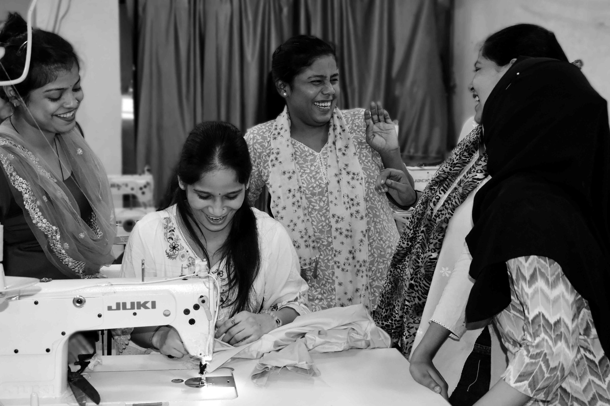

Garment
manufacturing
for brands
worldwide
Womenswear, menswear, home linen and accessories — woven and knitted, made to order from 200 pieces.

What we make


Brands we
manufacture for
Export capability with international shipping, door to door.
From tech pack
to packed carton
Sampling
Pattern development and prototyping from your tech pack or a reference sample.
Fabric sourcing
In-house sourcing across cotton, linen, viscose and blends — or work to your nominated mill.
Stitching
Woven and knitted production across womenswear, menswear, home linen and accessories.
Finishing
Pressing, trims, labelling and the detail work that decides how a garment hangs.
Quality control
Inline, mid-line and final inspection. Every piece checked before packing.
Packing & export
Custom labels, hang tags and export-ready packing. Shipped door to door.
Where it
is made


Production
specification
If your programme sits outside these numbers, tell us anyway. We would rather say so honestly than over-promise.
- Minimum order200 pieces and above
- Monthly capacity10,000–12,000 pieces
- Machines50+ sewing machines
- TurnaroundFast turnaround
- Quality controlInline, mid-line & final — 100% checked
- FabricSourcing available in-house
- CategoriesWoven & knitted, home linen, accessories
- ExportExport capability, international shipping
Tell us what
you are making
Send your tech pack, quantities and timings. We will come back with an honest answer on whether we are the right unit for it.